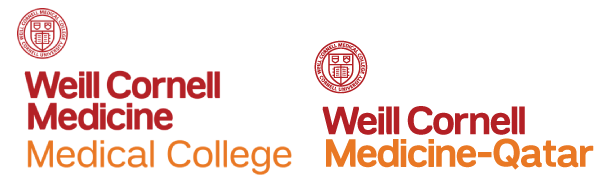

Welcome
On behalf of Weill Cornell Medicine-Qatar Distributed eLibrary, I am delighted to invite you to our second annual library symposium scheduled for April 11-13, 2016, at the Grand Heritage Hotel in Doha, Qatar. Pre-Conference workshops will be held on the 11th, followed by two days of presentations and discussion, including our popular roundtable discussions over lunch. The event is intended to highlight relevant topics in the profession and give library staff and professionals an opportunity for professional development and to network with colleagues and peers from Qatar and the Region.
Technology continues to drive rapid change in our profession, which is reflected in the theme for the symposium: “Emerging Technologies in Libraries”. Workshops and presentations will bring some of the emerging technologies in libraries today to the forefront, including Big Data, RDA, Data visualization, advanced web development, 3D printing and LMS. New topics this year are professional development for support staff and technology in museums.
We are pleased to have Barbara Tillett as our keynote speaker. Barbara has extensive experience in cataloging from the Library of Congress in the US, and will share her knowledge and insights on RDA in the Linked Data environment, an emerging and promising area for libraries today. Speakers from Qatar and the Region will share their expertise on a varied set of topics, which should stimulate good discussion and innovative ideas.
The Distributed eLibrary welcomes you to its second library symposium and looks forward to hosting three days of invigorating presentations and discussion.
Ellen N. Sayed, MLS, M.Acc
Director, Distributed eLibrary
Weill Cornell Medicine – Qatar
Education City – Doha, Qatar
Themes
A variety of subjects and topics will be discussed through the course of presentations, discussions, and workshops.
- Data visualization
- 3D Printing
- Museums & Curation
- Learning Management Systems
- Analytics
- Student Success
- Virtual Learning
- Copyright & Licensing
- Web Applications
- Training & Development
- Linked Data
- RDA
- Big Data
CME Accreditation and Credit Designation Statements
This activity has been planned and implemented in accordance with the accreditation requirements and policies of the Accreditation Council for Continuing Medical Education (ACCME) through the joint providership of Weill Cornell Medical College and Weill Cornell Medical College-Qatar. Weill Cornell Medical College is accredited by the ACCME to provide continuing medical education for physicians.
Weill Cornell Medical College designates this live activity for a maximum of 16 AMA PRA Category 1 Credit(s)™. Physicians should claim only the credit commensurate with the extent of their participation in the activity.
Brought to you by:
